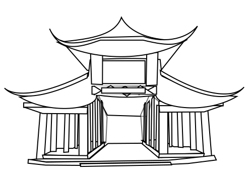

Day One
The reader is introduced to the the main character and throughout the entire book will never learn his real name. At this point he is already planning his crime and is purchasing glasses for his future "disguise".
The reader is introduced to the the main character and throughout the entire book will never learn his real name. At this point he is already planning his crime and is purchasing glasses for his future "disguise".
Reader is introduced to Kong Jie, the soon-to-be pefect victim, she is described as physically perfect and very intelligent.
The main character flips his aunt's small safe over revealling a jade buddha that he will pawn for money to fuel his impending crime.

In the morning the main character texts Kong Jie, convincing her to come over to talk about his aunt that he hates, saying that he is going to run away. When she arrives he kills Kong Jie and places her body in the washer.
After the murder, the main character catches a train to a small farming town where he would stay for a few days, waiting for the authorities to track him down.
The boy decides to turn his phone on and later wakes up to police dogs barking and searching for him. He scrambles to his hotel, gets his things, and escapes the police yet again. This time he finds a river and catches a boat down stream to a fishing city where he would againstay for several days.
Main character meets a 12 year old boy that realizes who he is and the kid attempts to trick him into a police trap for the reward money. He evades the police by runing through a maze of allies and finding a taxi where he finally ditches his phone.
The boy nearly falls into another police trap when he goes to his cousin's house. She warns him to run as the police come from nearby and begin chasing him, the warning was enough to let him escape.
The boy catches a train to the Qin Mountains and climbs to the top. He attempts suicide but fails. After his failed suicide he enters a billiard where two cops are and turns himself in.

The namesless boy is interrogated by a man whom happens to be a father, he tries everything to make the boy feel remorse until finally the interrogator loses it and screams, calling him an animal. With that the interrogation was over.
He is brought into a meeting room where he also wants to =tell this family educator everything until he the man ruins it by asking a dumb question.
He is led to the same meeting room once again were a female journalist begins to ask question. He starts spewing the truth to her until a man barges in and ruins it. He shut his mouth after that.
His mom comes to visit and tells the boy,"...tell them everything."
He is brought to the court room where the mother of Kong Jie berates him constantly and even blames the police for not responding to her in time about her missing daughter. A few days later he is sentenced to death.
The boys mom returns, this time with a lawyer, stating that they are going to appeal his case and that the mother of Kong Jie has agreed to file for clemancy. His mother paid Kong Jie's to file for clemancy.
The court of appeals is in session for several days, during which the boy repeatedly sabotages it becuase at this point he is ready to die. He plays games with all the witnesses and laughs a lot. In the end he tells the whole truth but no one can actually wrap their head around why he did it. In the end he says,"Shoot me." and the death sentence was upheld.